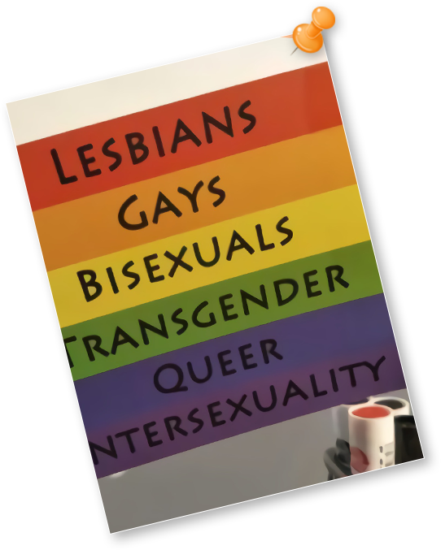
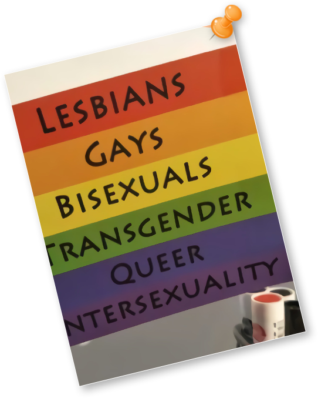
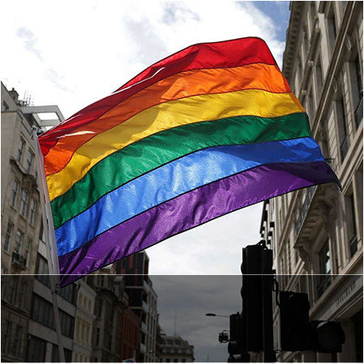
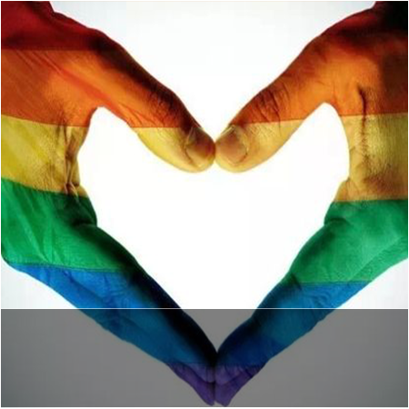
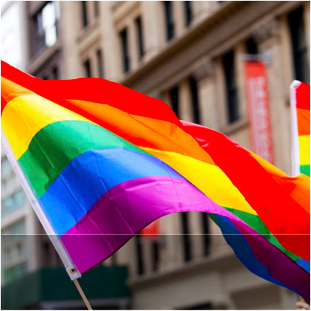
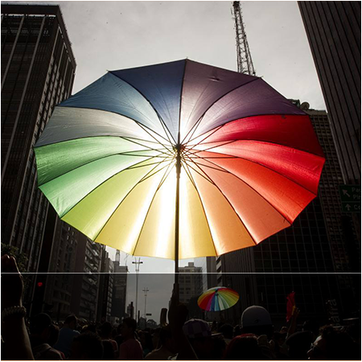

LGBT是女同性恋者（Lesbians）、男同性恋者（Gays）、双性恋者（Bisexuals）与跨性别者（Transgender）的英文首字母缩略字。
1990年代，由于“同性恋社群”一词无法完整体现相关群体，“LGBT”一词便应运而生、并逐渐普及。
在现代用语中，“LGBT”一词十分重视性倾向与性别认同文化多样性，除了狭义的指同性恋、双性恋或跨性别族群，也可广泛代表所有非异性恋者。另外，也有人在词语后方加上字母“Q”，代表酷儿（Queer）和/或对其性别认同感到疑惑的人（Questioning），即是“LGBTQ”。LGBT现今已获得了许多英语系国家中多数LGBT族群和LGBT媒体的认同及采用，成为一种非常主流的用法。
尽管LGBT与GLBT意思完全相同，但通常认为LGBT里包含了更多女同性恋女性主义的内容（L位于第一个字母）。
然而，“LGBT”的用法并非完全没有争议。部分双性人（Intersexuality）认为自己也属于LGBT族群中，因此支持使用“LGBTI”。也有个别族群不认为自己和LGBT所涵盖的其他族群有所关联。有人基于“同性恋分离主义”思想，认为男、女同性恋者应脱离其他族群成为另一个团体，理由是跨性别和变性者与LGB不同。有人则认为这些用语太过政治正确，企图将多样的族群划入灰色地带，意味着主流族群的问题和优先权获得了平等的考量。

LGBT是女同性恋者（Lesbians）、男同性恋者（Gays）、双性恋者（Bisexuals）与跨性别者（Transgender）的英文首字母缩略字。
1990年代，由于“同性恋社群”一词无法完整体现相关群体，“LGBT”一词便应运而生、并逐渐普及。
在现代用语中，“LGBT”一词十分重视性倾向与性别认同文化多样性，除了狭义的指同性恋、双性恋或跨性别族群，也可广泛代表所有非异性恋者。另外，也有人在词语后方加上字母“Q”，代表酷儿（Queer）和/或对其性别认同感到疑惑的人（Questioning），即是“LGBTQ”。LGBT现今已获得了许多英语系国家中多数LGBT族群和LGBT媒体的认同及采用，成为一种非常主流的用法。
尽管LGBT与GLBT意思完全相同，但通常认为LGBT里包含了更多女同性恋女性主义的内容（L位于第一个字母）。
然而，“LGBT”的用法并非完全没有争议。部分双性人（Intersexuality）认为自己也属于LGBT族群中，因此支持使用“LGBTI”。也有个别族群不认为自己和LGBT所涵盖的其他族群有所关联。有人基于“同性恋分离主义”思想，认为男、女同性恋者应脱离其他族群成为另一个团体，理由是跨性别和变性者与LGB不同。有人则认为这些用语太过政治正确，企图将多样的族群划入灰色地带，意味着主流族群的问题和优先权获得了平等的考量。

1903年 2月21日纽约，纽约市第一次在美国同性恋澡堂——阿里斯顿酒店浴场进行强制搜查。26名男性遭逮捕，12人被判定为索多玛行为的犯罪。这次行动中，有7人被判处四年到二十年的有期徒刑。
1907年 4月，德意志皇帝威廉二世的重臣被告发是同性恋，引起哈尔登=奥伊伦堡事件。与此相关联的是，请求废除德意志刑法第157条的自我协会（Gemeinschaft der Eigenen）的活动家领导人阿道夫布兰德（Adolf Brand）指明德意志帝国宰相伯恩哈特•冯•比洛（Bernhard von Bülow）公爵是同性恋者。公爵控诉布兰德破坏自己的名誉，解除了人们对自己的疑惑。布兰德被判处18个月的有期徒刑。
艾玛高盛第一次公开发言表示拥护同性恋者的权利。
1913年 娘炮（faggot）这个词语，在俄勒冈州波特兰出版的与犯罪有关的隐语集中作为表示男同性恋的词语，第一次被使用。适用的情况如下所示。“今晚的舞会，所有的娘炮都穿着女装”。
1920年 gay这个词语作为表示同性恋者的意思，首次在地下（文化）中被使用。
1921年 在英格兰，英国历史上第一次试图将女同性恋定为违法，但是失败。
1922年 根据在苏联生效的新刑法，正式使同性恋行为非刑事化。
1923年 “fag”这一词语出现在Nels Anderson的《流浪汉》上，是首次在出版物中间作为表示gay的词语被使用。适用情况如下所示。“fairy或fag是指为了利益而利用性的男人”
美洲最初的同性恋者权利组织人权协会在芝加哥创立。这场运动坚持了两三个月的时间，被警方强行终结。
美国拉德克里夫・霍尔所著的《孤独之井》一书出版。这本书引起巨大的法律争议，并将同性恋这个话题引入了人们的谈话中。
5月22日 《America the beautiful》的作词者Katharine Lee Bates死亡。
10月16日 德意志国会的委员会通过投票，决定废除刑法第175条规定。逐渐兴起的纳粹妨碍了决定的实施。导致废除失败。
1930年 新的丹麦刑法将同性恋非刑事化。此法于1933年生效。
1932年 新的波兰刑法在波兰整个地区将同性恋非刑事化。
纳粹禁止同性恋者团体。同性恋者被送往集中营。纳粹烧光了马格努斯菲尔德（Magnus Hirschfeld）的性学研究所的图书室，并破坏了研究所。
丹麦和菲律宾，同性恋非刑事化。
苏联，同性恋行为再次被定为犯罪。
1934年 乌拉圭同性恋非刑事化。
1936年 西班牙诗人费德里科·加西亚·洛尔卡在西班牙内战爆发时遭枪杀。
1937年 粉红三角对应男同性恋，第一次在纳粹的集中营中被使用。
1940年 冰岛同性恋非刑事化。
1941年 “变性意愿”这个词初次用来表示同性恋和双性恋。
1942年 瑞士同性恋非刑事化。准许发生性行为的年龄规定为20岁。
瑞典同性恋非刑事化。准许发生性行为的年龄规定为20岁。
苏里南同性恋合法化。
1945年 纳粹的集中营被盟军解放，但那里因为是同性恋而被收押的人们却并没有获得自由，根据德意志刑法第175条规定的判决，他们被要求按照既定的刑期服役，直至刑期结束。葡萄牙在国内历史上第二次实行同性恋非刑事化。
1946年 最古老的同性恋拥护组织之一COC（文化、休闲中心）在荷兰成立。这是至今为止存在的LGBT组织中最古老的组织。
1947年 北美第一本LGBT出版物《反之亦然》（Vice Versa）在洛杉矶由伊丽丝・艾迪（Edith Eyde）自费出版。
1948年丹麦，同性恋者团体“1948联盟”组建。
波兰的共产主义政权不管同性恋、异性恋，将所有人的性行为准许年龄定为15岁。
瑞典 瑞典・女同性恋・男同性恋・双性恋・跨性别恋权利联合（RFSL）成立。
德意志民主共和国（东德意志）根据纳粹刑法，废除了一部分第175条的修正内容。
洛杉矶 美洲第一个同性恋者团体Mattachine协会（Mattachine Society）成立。
美国 “狩猎同性恋”行动开始，190人因为性倾向而被政府解雇。
1951年 希腊同性恋非刑事化。
戴尔・詹宁斯被当做唆使犯罪而遭受起诉，对此圈套防御成功。
加利福尼亚州 ONE,Inc.成立。
9月10日，日本第一本会员制的男同杂志《阿多尼斯》创刊。三岛由纪夫等人给此杂志投稿。
6月7日 阿兰・图灵氰化物中毒身亡。这是作为对同性恋的处罚，使其受到1年的保护观察处分，并迫使其性欲衰减而给予荷尔蒙药物18个月之后的结果。
法国 第一个同性恋者团体阿卡迪（Arcadie）成立。
1955年 圣弗朗西斯科“比利提斯的姑娘们（The Daughters of Bilitis）”成立。
1956年 泰国同性恋行为非刑事化。
“Transsexual”这个词语被美国的外科医生哈里·本杰明制造出来。
英国 沃尔芬登委员会的报告建议将成人间两情相悦的同性性行为非刑事化。
心理学者伊夫林·胡克发表研究报告表示，同性恋的男性跟不是同性恋的男性一样，都是适应社会的发展需求的。这是1973年美国精神医学会将同性恋从与疾病手册（DSM）中删除的重要原因。
英国 同性恋法律改革协会成立。
芭芭拉·吉廷斯在纽约创建“比利提斯的姑娘们”分会。
1960年 日本 为男同性恋常设专页的SM杂志《风俗奇谭》创刊。
捷克斯洛伐克和匈牙利将索多玛行为非刑事化。
罗马教皇厅宣称，“对同性恋这种邪恶的性癖好受影响的”人，不论是谁，在天主教教会里，都不应当被允许成为圣职者或任职。
José Sarria是美国第一个公开自己是同性恋的公职候选人，并当选了市政委员。
1962年 伊利诺伊州成为美国第一个从刑法中删除索多玛法规的州。
1963年 以色列拒绝执行1936年英国统治时代制定的法律有关条款（实际上没有实施），并通过了法庭的判决，事实上将索多玛行为和男性间的性行为非刑事化了。
纽约Mattachine协会对纽约州酒水饮料局禁止向同性恋出售酒水饮料的事情进行对抗，他们聚集到纽约市的朱利叶斯酒吧进行Sip In（公开同性恋身份之后点酒的行动）。
同性恋拥护组织全国计划会议（1967年成为NACHO，北美同性恋拥护组织会议）成立。
康普顿的食堂发生暴乱。
乍得将同性恋非刑事化。
英格兰和威尔士 1967年性犯罪法将男性之间的性行为非刑事化。
温赖特・丘吉尔所著的名为《男性间的同性恋行为》一书以现实生活中的同性恋作为对象，开始科学的研究，并将“homophobia(恐惧同性恋)”这个词的前身“homoerotophobia（恐惧同性恋色情）”写进书中。
纽约市开放了世界上第一个面向同性恋的书店，奥斯卡·王尔德书店。
阿根廷成立了拉丁美洲第一个同性恋者团体“我们的世界”（Nuestro Mundo）。
洛杉矶Black Cat Tavern（黑猫小酒馆）的强制搜查促进了同性恋者权利运动。
哥伦比亚大学生同性恋拥护联盟成为美国第一个在制度上被认可的同性恋学生团队。
东德意志刑法第175条被缓和，18岁以上的同性恋行为逐渐不属于犯罪。
保加利亚将成人的同性恋关系非刑事化。
纽约发生石墙暴乱。
西德意志刑法第175条被缓和。
加拿大 关于索多玛行为，性的准许年龄规定为21岁，非索多玛行为的准许年龄为14岁，同性恋行为合法化。
波兰同性恋卖淫非刑事化。
加拿大总理的发言“政府不许介入国民的卧室”成为格言被大家引用。
墨尔本成立了澳大利亚第一个同性恋权利组织，“比利提斯的姑娘们”的分部。
科索沃将同性恋非刑事化。
纽约市举行了第一个同性恋三月解放日（Gay Liberation Day March）。
洛杉矶举行了第一个同性恋三月自由日（Gay Freedom Day March）。
圣弗朗西斯科举行了第一次“Gay In”。
澳大利亚组织了CAMP（Campaign Against Moral Prosecution），反对道德起诉运动。
日本，东乡健在参议院议员选举中公开了同性恋者的身份，成为第一候选人。
墨尔本成立了Society Five（同性恋者权利组织）。
奥地利、哥斯达黎加、芬兰将同性恋非刑事化。
科罗拉多州和俄勒冈州废除索多玛法规。
爱达荷州虽然废除了索多玛法规，但是摩门教教徒和天主教教徒的激愤使得废除索多玛法规再次复活[19][20]。
荷兰将同性恋的性准许年龄改成跟异性恋一样，都是16岁。
美国自由意志党要求废除包含索多玛法规在内的一切与没有被害者却判定为犯罪的相关法律。
富兰克林・卡梅尼（Frank Kameny）成为美国议会议员中第一个公开自己是同性恋的候选人。
密歇根大学的Gay Advocate's Office被人们熟知，开设了世界上第一个大学LGBT项目办公室。
7月，日本第一本商业同性恋杂志《蔷薇族》（同年9月号）由第二书房创刊。
瑞典成为世界上第一个认可跨性别恋者在法律上更改性别的国家，并免费提供荷尔蒙药物。
夏威夷州将同性恋合法化。
南澳大利亚劳动党的东・当斯唐政权在人们的私生活问题上提出所谓同意成人（consenting adult）的抗辩。虽然此次抗辩是根据罗伯特・希尔原国防大臣的父亲马利・希尔提出的法案而起步的，但是却成为1975年时州内废除索多玛法规的原因。
挪威将同性恋非刑事化。
密歇根州的东兰辛和安娜堡以及圣弗朗西斯科成为美国最初制定同性恋者权利条理的城市。
圣弗朗西斯科的吉姆·福斯特（Jim Foster）和布法罗（纽约州）的玛德琳D戴维斯（Madeline D. Davis）成为在迈阿密召开的民主党会中男同性恋和女同性恋里最初的代表，并发表演说，主张将同性恋者的权利这个项目写进民主党纲领。
第一首同性恋赞歌《石墙・国家》由玛德琳D戴维斯作曲、录制，根据尼亚加拉边境的Mattachine协会发表的数据表明，这首歌获得每分钟45转的记录被发行。
美国第一个研究女同性恋的学科“女同性恋101”在布法罗大学由玛格丽特・斯莫尔（Margaret Small）和玛德琳D戴维斯授课。
美国精神医学会以伊夫林・胡克的研究和主张为基准，从精神障碍的诊断和统计的入门（DSM-II）中将同性恋删除。
马耳他将同性恋合法化。
西德意志将同性恋者的性准许年龄下降到18岁（不过，异性恋者的性准许年龄为14岁）。
Kathy Kozachenko作为第一个公开同性恋者身份并入选公职的美国人，成为安阿伯市议会议员。
俄亥俄州废除索多玛法规。
罗伯特・格兰特（Robert Grant）反对同性恋议事日程（gay agenda），并创设了美国基督教理由（American Christian Cause）。这是美国现代基督教政治的开端。
伦敦设立了第一个面向LGBT提供电话聊天服务的机构，伦敦・女同性恋・男同性恋（London Lesbian and Gay）电话交换台。一年后又继续设立了布莱顿・女同性恋・男同性恋(Brighton Les and Gay)电话交换台。
1月5日，在伦敦Brunswick Four被逮捕。这个仇视女同性恋的事件为多伦多的男同性恋及女同性恋社会团体注入了活力[21]。
Elaine Noble作为第二个公开同性恋身份并入选担任公职的美国人，成为马萨诸塞州议会下院议员。
南澳大利亚州成为澳大利亚第一个准许在成人间私生活方面的同性恋合法化的州。
巴拿马成为世界上第二个认可那些接受了变性手术的跨性别恋者提交个人文书以反映新性别的国家。
罗伯特・格兰特在美国创立了引起反对同性恋者权利的全国运动基督教之声（Christian Voice）。
澳大利亚成立同性恋法律改革联合（Homosexual Law Reform Coalition）及同性恋教师群体（Gay Teachers Group）。
澳大利亚首都特别地区在私生活方面准许成人间的同性恋非刑事化，将性的准许年龄跟异性恋的状态保持一致。
丹麦将同性恋和异性恋的性行为准许年龄调整为一样。
圣弗朗西斯科 哈维·米尔克被选拔为市政监督官，成为美国人中第三个公开同性恋者身份并就任公职的人。
弗罗里达州迈阿密－戴德县制定了人权条例，但同年，在由Anita Bryant率领的战斗性反同性恋者人权运动后期被废除。
加拿大的魁北克州成为世界上第一个比市和县要大的管辖区域中，禁止公共及私下领域的性倾向歧视地区。
克罗地亚、黑山、斯洛文尼亚和伏伊伏丁那将同性恋合法化。
圣弗朗西斯科市政监督官哈维・米尔克和市长乔治莫斯贡（George Moscone）被前市政监督官丹・怀特（Dan White）暗杀。
悉尼举行第一届同性恋狂欢节（Sydney Gay and Lesbian Mardi Gras）。
彩虹旗（rainbow flag）作为第一次同性恋大游行的象征被使用。
瑞典将性行为的准许年龄统一。
圣弗朗西斯科成立最古老闻名的女同性恋-女权主义者（lesbian-feminist）BDSM组织。组织里有名的成员有帕特里克柯丽菲亚（Pat Califia）、盖尔鲁宾（Gayle Rubin）等。这是最早主张性别阳性女权主义（sex-positive feminism）的组织。
8月24日，在日本，东乡健组建了同性恋者的政治团体“杂民之会”。
华盛顿DC举行了第一次全国性的同性恋者权利游行。
哈利・海伊（Harry Hay）在亚利桑那州的集会上首次呼吁组建激进分子的圣境（Radical Faerie）。
古巴和西班牙将同性恋非刑事化。
美国民主党在党大会上作为美国的主要政党首次批准与同性恋者权利有关的纲领。
苏格兰将同性恋非刑事化。
美国社会党的大卫・麦克雷诺兹（David McReynolds）成为第一个公开自己是LGBT成员的美国总统候选人。
“人权运动基金”（Human Rights Campaign Fund）由Steve Endean创建，并主张男同性恋、女同性恋、双性恋、跨性别恋的平等。
欧洲人权法院就达恩吉对英国（Dudgeon v. United Kingdom）事件，使北爱尔兰的判定成人间同性恋行为为犯罪的法规失效。翌年，北爱尔兰将同性间的性行为非刑事化。
澳大利亚的维多利亚州和哥伦比亚将性的准许年龄统一，将同性恋非刑事化。
“道德多数派”（Moral Majority）开始反同性恋运动。
挪威成为世界上第一个制定法律，防止对同性恋者有歧视的国家。
香港进行了第一次变性手术。
法国将性准许年龄统一。
圣弗朗西斯科召集1600个参加者，举办了第一届同性恋运动会（Gay Games）。
北爱尔兰将同性恋非刑事化。
威斯康星州成为美国第一个禁止歧视同性恋者的州。
新南威尔士州成为实际上或被认定为是澳大利亚第一个禁止以同性恋为理由进行歧视的州。
马萨诸塞州选出的美国议院下院议员Gerry Studds在议场上公开自己的同性恋身份，成为第一个在美国议会上公开自己是同性恋的议员。
根西岛（包括奥尔德尼岛、赫姆和萨克岛）和葡萄牙将同性恋非刑事化。
艾滋病被杰里·福尔韦尔（Jerry Falwell）描述成“同性恋的疾病”。
香港组建了女同性恋和男同性恋团体“百分之十俱乐部”。
马萨诸塞州 虽然Gerry Studds在前一年出柜了，但是再次被选上成为议员。
澳大利亚新南威尔士州和北部地区将同性恋行为合法化。
被新选出的英国议会议员克里斯・史密斯（Chris Smith）宣称：“我的名字叫克里斯・史密斯。我是Islington South和Finsbury选出的劳动党所属国会议员，我是同性恋”，其成为英国议会中第一个表明自己是同性恋的政治家。
通过几个不同的既存团体合并，阿根廷组建了同性恋者共同体（Comunidad Homosexual Argentina,CHA）。
伯克利（加利福尼亚州）成为美国第一个以市内职员为对象，采用家庭关系健康补助金计划的城市。
法国禁止以在就业及服务的基础上以生活方式为理由的歧视。
第一次为同性恋大屠杀的受害者举行悼念仪式。
比利时将性行为准许年龄统一。
法国日本成立男同性恋和女同性恋组织（通称OCCUR）
新西兰制定同性恋法修政法，将年满16周岁的男性之间的性行为合法化。
6月，再“鲍尔斯哈德威克事件”（Bowers v.Hardwick）的判决中，美国最高法院认可禁止口交及肛交的佐治亚洲法律，决定关于隐私在宪法上的权力不必要牵扯到同性恋关系，但关于是否对异性恋者执行，该法则没有提及。
新西兰制定同性恋法修政法，将年满16周岁的男性之间的性行为合法化。
6月，再“鲍尔斯哈德威克事件”（Bowers v.Hardwick）的判决中，美国最高法院认可禁止口交及肛交的佐治亚洲法律，决定关于隐私在宪法上的权力不必要牵扯到同性恋关系，但关于是否对异性恋者执行，该法则没有提及。
“ACT UP”举办了第一次大型示威，有17人遭逮捕。
美国联邦议会员巴尼弗兰克（Barrney Frank）出柜。
遭迫害的同性恋者纪念碑Homomonument在阿姆斯特丹建立。
美国联邦议会员巴尼弗兰克（Barrney Frank）出柜。
遭迫害的同性恋者纪念碑Homomonument在阿姆斯特丹建立。
瑞典成为第一个为保护同性恋者的社会福利、税金、继承而制定法律的国家。
英格兰及威尔士制定了地方政府法第28条。苏格兰制定了与此略为相同的法律。
加拿大联邦议会议员斯文・罗宾逊（Svend Robinson）出柜。
加拿大将索多玛行为的性准许年龄下降到18岁。
伯利兹和以色列将索多玛行为和男性间的性行为在法律上非刑事化（与英国委任统治时期的1936年被制定的法律相关联的规定，在以色列没有被实施）。
英格兰及威尔士制定了地方政府法第28条。苏格兰制定了与此略为相同的法律。
加拿大联邦议会议员斯文・罗宾逊（Svend Robinson）出柜。
加拿大将索多玛行为的性准许年龄下降到18岁。
伯利兹和以色列将索多玛行为和男性间的性行为在法律上非刑事化（与英国委任统治时期的1936年被制定的法律相关联的规定，在以色列没有被实施）。
西澳大利亚州将男性同性恋非刑事化（但是，性的准许年龄为21岁）。
列支敦士登将同性恋合法化。
丹麦成为世界上第一个制定关于登录制合作关系（一个类似于民用公会[Civil Union]的制度）的国家，认可对同***给予婚姻和等同于婚姻的权利（但是，领养的权利以及在教会举行婚姻仪式的权利除外）。
列支敦士登将同性恋合法化。
丹麦成为世界上第一个制定关于登录制合作关系（一个类似于民用公会[Civil Union]的制度）的国家，认可对同***给予婚姻和等同于婚姻的权利（但是，领养的权利以及在教会举行婚姻仪式的权利除外）。
英国组建LGBT人权直接行动团体愤怒！（OutRage!）。
捷克斯洛伐克统一性的准许年龄。
泽西岛将同性恋行为合法化。
贾斯丁法沙努（Justin Fashanu）成为第一个在媒体上出柜的专业足球运动员。
捷克斯洛伐克统一性的准许年龄。
泽西岛将同性恋行为合法化。
贾斯丁法沙努（Justin Fashanu）成为第一个在媒体上出柜的专业足球运动员。
2月，日本引发东京青年之家诉讼案。起因是基督教团体在东京的住宿设施内故意引起对同性恋者团体的骚扰，对于首都拒绝再次利用住宿设施的事实而引发了诉讼，1997年以原告的完全胜诉而告终。
巴哈马、香港、乌克兰以及澳大利亚的昆士兰州将索多玛行为非罪化。
红丝带第一次作为促进对艾滋病患者的理解和支持运动的象征被使用。
巴哈马、香港、乌克兰以及澳大利亚的昆士兰州将索多玛行为非罪化。
红丝带第一次作为促进对艾滋病患者的理解和支持运动的象征被使用。
世界保健机关将同性恋从疾病以及关联保健问题的国际统计分类中删除。
澳大利亚第一次认可同性恋者服兵役。
马恩岛、爱沙尼亚及拉脱维亚将同性恋合法化。
冰岛、卢森堡及瑞士统一性的准许年龄。
尼加拉瓜再次将同性恋定为犯罪（2008年3月再次将同性恋非罪化）。
澳大利亚第一次认可同性恋者服兵役。
马恩岛、爱沙尼亚及拉脱维亚将同性恋合法化。
冰岛、卢森堡及瑞士统一性的准许年龄。
尼加拉瓜再次将同性恋定为犯罪（2008年3月再次将同性恋非罪化）。
布兰顿蒂娜（Brandon Teena）遭奸杀。
华盛顿DC举行第三届同性恋者人权游行。
诺福克岛及爱尔兰废除索多玛法规。
直布罗陀和俄罗斯（除车臣共和国）准许将男性之间的索多玛行为非罪化。
立陶宛将同性恋合法化。
挪威制定登录制合作关系（民主公会）法，认可对同性情侣给予合法伴侣和等同于婚姻的权利（但是，领养的权利及在教会举行婚姻仪式的权利除外）
华盛顿DC举行第三届同性恋者人权游行。
诺福克岛及爱尔兰废除索多玛法规。
直布罗陀和俄罗斯（除车臣共和国）准许将男性之间的索多玛行为非罪化。
立陶宛将同性恋合法化。
挪威制定登录制合作关系（民主公会）法，认可对同性情侣给予合法伴侣和等同于婚姻的权利（但是，领养的权利及在教会举行婚姻仪式的权利除外）
日本东京举行第一次同性恋游行[东京レズビアン・ゲイ・パレード]。
百慕达群岛、塞尔维亚及南非共和国将同性恋合法化。
英国将男性同性恋者的性准许年龄下降到18岁。
美国医师会将同性恋从治疗对象中移除。
加拿大对在本国安危受到威胁的同性恋者，认可其难民地位。
德意志刑法第175条被废除。
以色列最高法院将同性恋者的伴侣权利定义为跟Common Law(通用法规)上的夫妇权利相同。
百慕达群岛、塞尔维亚及南非共和国将同性恋合法化。
英国将男性同性恋者的性准许年龄下降到18岁。
美国医师会将同性恋从治疗对象中移除。
加拿大对在本国安危受到威胁的同性恋者，认可其难民地位。
德意志刑法第175条被废除。
以色列最高法院将同性恋者的伴侣权利定义为跟Common Law(通用法规)上的夫妇权利相同。
瑞典制定登录制合作关系法。
加拿大最高法院决定在加拿大权利和自由的宪章下，禁止将性倾向做为歧视的理由。
阿尔巴尼亚和摩尔多瓦将同性恋非罪化。
美国的团体“人权运动”将“基金”这个词语从团体名中删去，它的任务是朝着促进“保障男同性恋、女同性恋、双性恋及跨性别恋者的人人平等，在家庭、职场以及一切社会团体中成为美国这个大家庭中的完整成员被接受”的方向扩展。
加拿大最高法院决定在加拿大权利和自由的宪章下，禁止将性倾向做为歧视的理由。
阿尔巴尼亚和摩尔多瓦将同性恋非罪化。
美国的团体“人权运动”将“基金”这个词语从团体名中删去，它的任务是朝着促进“保障男同性恋、女同性恋、双性恋及跨性别恋者的人人平等，在家庭、职场以及一切社会团体中成为美国这个大家庭中的完整成员被接受”的方向扩展。
布基纳法索将性准许年龄统一。
冰岛制定登录制合作关系法。
匈牙利批准同性情侣的不登记同居关系。
罗马尼亚和马其顿共和国将同性恋非罪化。
冰岛制定登录制合作关系法。
匈牙利批准同性情侣的不登记同居关系。
罗马尼亚和马其顿共和国将同性恋非罪化。
南非共和国成为第一个在宪法上命令禁止以性倾向为理由进行歧视的国家（该宪法于该年生效）。
英国扩展了类似婚姻的同性恋伴侣移民权。
斐济成为第二个在宪法中明令禁止以性倾向为理由进行歧视的国家。
澳大利亚的塔斯马尼亚州废除了禁止私下同性恋行为的法律，在澳大利亚有这种法律的州都逐渐废除了这项法律。
厄瓜多尔将同性恋非罪化。
俄罗斯统一性的准许年龄。
英国扩展了类似婚姻的同性恋伴侣移民权。
斐济成为第二个在宪法中明令禁止以性倾向为理由进行歧视的国家。
澳大利亚的塔斯马尼亚州废除了禁止私下同性恋行为的法律，在澳大利亚有这种法律的州都逐渐废除了这项法律。
厄瓜多尔将同性恋非罪化。
俄罗斯统一性的准许年龄。
马修・谢泼德遭谋杀。
爱尔兰引用禁止以性倾向为理由的不正当解雇就业平等法。
根据Vriend v. Alberta事件的判决，加拿大阿尔伯塔州的人权法“个人权利保护法”的对象里将性倾向读入。
厄瓜多尔成为第三个在宪法中命令禁止以性倾向为理由进行歧视的国家。
波斯尼亚・黑塞哥维那、智利、哈萨克斯坦、吉尔吉斯斯坦及塔吉克斯坦将同性恋合法化。
克罗地亚及拉脱维亚统一性的准许年龄。
塞浦路斯将同性恋非罪化。
爱尔兰引用禁止以性倾向为理由的不正当解雇就业平等法。
根据Vriend v. Alberta事件的判决，加拿大阿尔伯塔州的人权法“个人权利保护法”的对象里将性倾向读入。
厄瓜多尔成为第三个在宪法中命令禁止以性倾向为理由进行歧视的国家。
波斯尼亚・黑塞哥维那、智利、哈萨克斯坦、吉尔吉斯斯坦及塔吉克斯坦将同性恋合法化。
克罗地亚及拉脱维亚统一性的准许年龄。
塞浦路斯将同性恋非罪化。
加利福尼亚州采用伴侣关系登记法。
法国制定国民工会法。
英国建立“同性恋青年同盟”（Queer Youth Alliance）。
以色列最高法院批准女同性恋者在法律上成为其女伴的亲生儿子的另一个母亲。
芬兰统一性的准许年龄。
法国制定国民工会法。
英国建立“同性恋青年同盟”（Queer Youth Alliance）。
以色列最高法院批准女同性恋者在法律上成为其女伴的亲生儿子的另一个母亲。
芬兰统一性的准许年龄。
巴西同性收养变得合法
美国密西西比州限制收养使同性伴侣收养孩子非法。此外，法规允许性取向被用作监护纠纷中的不利考虑因素。
美国犹他州，对于未在同居情况下缔结合法婚姻的个人，不得领养。这也适用于养育子女。对于同性伴侣而言，第二次父母领养也是非法的。
爱尔兰通过新的反歧视保护法。，在申请住房或房东/业主歧视时，禁止基于性取向和/或性别认同的歧视。
美国密西西比州限制收养使同性伴侣收养孩子非法。此外，法规允许性取向被用作监护纠纷中的不利考虑因素。
美国犹他州，对于未在同居情况下缔结合法婚姻的个人，不得领养。这也适用于养育子女。对于同性伴侣而言，第二次父母领养也是非法的。
爱尔兰通过新的反歧视保护法。，在申请住房或房东/业主歧视时，禁止基于性取向和/或性别认同的歧视。
美国阿肯色州最高法院推翻了1977年禁止同性恋活动的法律
芬兰同性伴侣在法律上可以组成登记的伴侣关系
罗马尼亚法律的最后一部分将同性恋的公开表现定为刑事犯罪被废除。
维多利亚，澳大利亚婚姻法受联邦法的约束，维多利亚州在2001年提供的同性关系与事实上的异性恋关系（作为家庭伴侣关系）具有同等地位
荷兰成为世界上第一个将同性恋婚姻合法化的国家。下议院以109票赞成同性婚姻，其中33票反对于2000年9月12日。12月19日，高级商会对该法案投赞成票。贝娅特丽克丝女王于12月21日批准该法，并于2001年4月1日生效。
俄国禁止男男性献血（无限期推迟）
芬兰同性伴侣在法律上可以组成登记的伴侣关系
罗马尼亚法律的最后一部分将同性恋的公开表现定为刑事犯罪被废除。
维多利亚，澳大利亚婚姻法受联邦法的约束，维多利亚州在2001年提供的同性关系与事实上的异性恋关系（作为家庭伴侣关系）具有同等地位
荷兰成为世界上第一个将同性恋婚姻合法化的国家。下议院以109票赞成同性婚姻，其中33票反对于2000年9月12日。12月19日，高级商会对该法案投赞成票。贝娅特丽克丝女王于12月21日批准该法，并于2001年4月1日生效。
俄国禁止男男性献血（无限期推迟）
美国威尔士同性收养变得合法。女同性恋伴侣也可以享受IVF治疗。
英国同性收养变得合法。IVF治疗也适用于女同性恋伴侣。
台湾允许男女同性恋士兵保持军纪标准。
维多利亚，澳大利亚婚姻法受联邦法的约束，维多利亚州在2001年提供的同性关系与事实上的异性恋关系（作为家庭伴侣关系）具有同等地位
荷兰成为世界上第一个将同性恋婚姻合法化的国家。下议院以109票赞成同性婚姻，其中33票反对于2000年9月12日。12月19日，高级商会对该法案投赞成票。贝娅特丽克丝女王于12月21日批准该法，并于2001年4月1日生效。
俄国禁止男男性献血（无限期推迟）
英国同性收养变得合法。IVF治疗也适用于女同性恋伴侣。
台湾允许男女同性恋士兵保持军纪标准。
维多利亚，澳大利亚婚姻法受联邦法的约束，维多利亚州在2001年提供的同性关系与事实上的异性恋关系（作为家庭伴侣关系）具有同等地位
荷兰成为世界上第一个将同性恋婚姻合法化的国家。下议院以109票赞成同性婚姻，其中33票反对于2000年9月12日。12月19日，高级商会对该法案投赞成票。贝娅特丽克丝女王于12月21日批准该法，并于2001年4月1日生效。
俄国禁止男男性献血（无限期推迟）
台湾同性婚姻成为未注册的同居关系。是亚太地区的第一个考虑将同性婚姻合法化的地区，但立法机构的立法停滞不前。
菲律宾LGBT歧视变得非法。
乌拉圭LGBT歧视变得非法。在2003歧视的保护在刑法扩展到性倾向和性别身份。在2004年，正式的反歧视法案获得了通过，包括对性倾向和性别身份的规定
美国同性恋活动变得合法。
荷兰成为世界上第一个将同性恋婚姻合法化的国家。下议院以109票赞成同性婚姻，其中33票反对于2000年9月12日。12月19日，高级商会对该法案投赞成票。贝娅特丽克丝女王于12月21日批准该法，并于2001年4月1日生效。
俄国禁止男男性献血（无限期推迟）
菲律宾LGBT歧视变得非法。
乌拉圭LGBT歧视变得非法。在2003歧视的保护在刑法扩展到性倾向和性别身份。在2004年，正式的反歧视法案获得了通过，包括对性倾向和性别身份的规定
美国同性恋活动变得合法。
荷兰成为世界上第一个将同性恋婚姻合法化的国家。下议院以109票赞成同性婚姻，其中33票反对于2000年9月12日。12月19日，高级商会对该法案投赞成票。贝娅特丽克丝女王于12月21日批准该法，并于2001年4月1日生效。
俄国禁止男男性献血（无限期推迟）
法国法律规定歧视LGBT违法
亚美尼亚同性婚姻成为外国同性婚姻的唯一认可。
葡萄牙法律确禁止基于性取向的歧视
佛得角同性恋活动变得合法。
亚美尼亚同性婚姻成为外国同性婚姻的唯一认可。
葡萄牙法律确禁止基于性取向的歧视
佛得角同性恋活动变得合法。
拉脱维亚同性婚姻成为外国同性婚姻的唯一认可。民事联盟正在等待合法化。欧盟法律规定的外国婚姻承认。
英国同性婚姻成为民事结合。积极分子正试图让这种合法化。欧盟裁决要求合法化。同性恋婚姻合法化待定。来自其他国家的外国同性婚姻。
加拿大同性婚姻变得合法。加拿大的同性婚姻在“民事婚姻法”中成为合法婚姻。
西班牙同性婚姻变得合法。
英国同性婚姻成为民事结合。积极分子正试图让这种合法化。欧盟裁决要求合法化。同性恋婚姻合法化待定。来自其他国家的外国同性婚姻。
加拿大同性婚姻变得合法。加拿大的同性婚姻在“民事婚姻法”中成为合法婚姻。
西班牙同性婚姻变得合法。
南非同性婚姻变得合法。
西班牙改变法律性别的权利变得合法，不需要手术。改变您的法律性别不需要手术，但是，它需要证明某种形式的医疗治疗两年。
以色列同性婚姻成为外国同性婚姻的唯一认可。同性恋结婚，民事结合。以及未注册的同居。
秘鲁同性婚姻成为外国同性婚姻的唯一认可。同性恋婚姻待遇和工会。同性恋联盟在2018年可能是合法的。
刚果民主共和国同性婚姻变得不合法，宪法明确禁止同性婚姻。
西班牙改变法律性别的权利变得合法，不需要手术。改变您的法律性别不需要手术，但是，它需要证明某种形式的医疗治疗两年。
以色列同性婚姻成为外国同性婚姻的唯一认可。同性恋结婚，民事结合。以及未注册的同居。
秘鲁同性婚姻成为外国同性婚姻的唯一认可。同性恋婚姻待遇和工会。同性恋联盟在2018年可能是合法的。
刚果民主共和国同性婚姻变得不合法，宪法明确禁止同性婚姻。
尼泊尔同性恋活动变得合法。
黑山同性婚姻成为外国同性婚姻的唯一认可。根据2018年欧盟裁决要求合法化。民事工会待决。同性恋婚姻待定。根据欧盟法律。拟议的同性恋联盟。
澳大利亚同性采用变为不适用。这不是在联邦层面决定，而是在地区政府层面决定。有些地区允许，有些则没有。
台湾在某些情况下，LGBT歧视变得非法。台湾于2007年禁止工作场所歧视LGBT公民。
黑山同性婚姻成为外国同性婚姻的唯一认可。根据2018年欧盟裁决要求合法化。民事工会待决。同性恋婚姻待定。根据欧盟法律。拟议的同性恋联盟。
澳大利亚同性采用变为不适用。这不是在联邦层面决定，而是在地区政府层面决定。有些地区允许，有些则没有。
台湾在某些情况下，LGBT歧视变得非法。台湾于2007年禁止工作场所歧视LGBT公民。
新西兰改变法律性别的权利变得合法，不需要手术。
俄国MSM的献血活动变得合法。在2008年，俄罗斯废除了对同性恋人献血禁令。该法于2008年4月16 日由俄罗斯卫生和社会发展部部长Tatyana Golikova 签署。
厄瓜多尔同性婚姻成为民事结合。虽然婚姻仍被定义为男女之间的结合，但2008年宪法第68条也规定：两个人之间没有任何其他婚姻关系的稳定和一夫一妻制的联盟，因为时间流逝在法律规定的条件和情形下，享有与正式婚姻关系约束的家庭的同等权利和义务。
俄国MSM的献血活动变得合法。在2008年，俄罗斯废除了对同性恋人献血禁令。该法于2008年4月16 日由俄罗斯卫生和社会发展部部长Tatyana Golikova 签署。
厄瓜多尔同性婚姻成为民事结合。虽然婚姻仍被定义为男女之间的结合，但2008年宪法第68条也规定：两个人之间没有任何其他婚姻关系的稳定和一夫一妻制的联盟，因为时间流逝在法律规定的条件和情形下，享有与正式婚姻关系约束的家庭的同等权利和义务。
墨西哥同性婚姻变得合法。在31/31州获得认可; 几个州（瓦哈卡州，梅里达州和奇瓦瓦州）现在通过司法程序/法院命令进行同性婚姻。
印度尼西亚改变法律性别的权利变得合法，但需要手术。缺少文档上的非二进制选项。
度尼西亚改变法律性别的权利变得模棱两可。2009年12 月，法院在印度尼西亚作出裁决，规定必须允许经过性别重新分配手术的印度尼西亚人在身份证件上改变性别。
乌拉圭同性收养变得合法。在2009年，乌拉圭成为第一个拉美国家允许同性伴侣领养孩子。
波斯尼亚和黑塞哥维那LGBT歧视变得非法。法律明确规定基于性取向的歧视可判处监禁
印度尼西亚改变法律性别的权利变得合法，但需要手术。缺少文档上的非二进制选项。
度尼西亚改变法律性别的权利变得模棱两可。2009年12 月，法院在印度尼西亚作出裁决，规定必须允许经过性别重新分配手术的印度尼西亚人在身份证件上改变性别。
乌拉圭同性收养变得合法。在2009年，乌拉圭成为第一个拉美国家允许同性伴侣领养孩子。
波斯尼亚和黑塞哥维那LGBT歧视变得非法。法律明确规定基于性取向的歧视可判处监禁
墨西哥LGBT就业歧视成为性取向和性别认同。最近的改革或劳动法包括一项保护性别和性取向的非歧视性条款。
库拉索同性婚姻成为外国同性婚姻的唯一认可。同性恋联盟正在等待合法化。
斯里兰卡改变法律性别的权利变得合法，不需要手术。
葡萄牙MSM的献血活动变得合法。在葡萄牙，献血有关于性行为的规则，但对于同性恋者和异性恋者来说，它们是相同的。
库拉索同性婚姻成为外国同性婚姻的唯一认可。同性恋联盟正在等待合法化。
斯里兰卡改变法律性别的权利变得合法，不需要手术。
葡萄牙MSM的献血活动变得合法。在葡萄牙，献血有关于性行为的规则，但对于同性恋者和异性恋者来说，它们是相同的。
哈萨克斯坦同性婚姻成为未注册的同居关系。第一个象征性夫妇在哈萨克斯坦结婚。
爱尔兰通过男男性献血变为禁止（无限期推迟）。爱尔兰输血服务公司禁止男男性接触者的血液。他们的政策规定：“为了确保血液供应的持续安全，我们目前要求那些携带血源性病毒特别高风险的人不要献血。这包括曾与另一个人发生性关系的男性。男人/男人”。
德国改变法律性别的权利变得合法，不需要手术。德国宪法法院认定，要求手术改变一个人的法律性别违宪的规定。
葡萄牙改变法律性别的权利变得合法，但需要手术。葡萄牙的个人可以在出生证上合法地改变性别和姓名。
巴西同性婚姻成为民事结合。虽然民间联盟的第一次正式法律承认发生在2004年（见第一来源），但最高法院直到2011年5月5 日才在全国范围内支持民事结合。
爱尔兰通过男男性献血变为禁止（无限期推迟）。爱尔兰输血服务公司禁止男男性接触者的血液。他们的政策规定：“为了确保血液供应的持续安全，我们目前要求那些携带血源性病毒特别高风险的人不要献血。这包括曾与另一个人发生性关系的男性。男人/男人”。
德国改变法律性别的权利变得合法，不需要手术。德国宪法法院认定，要求手术改变一个人的法律性别违宪的规定。
葡萄牙改变法律性别的权利变得合法，但需要手术。葡萄牙的个人可以在出生证上合法地改变性别和姓名。
巴西同性婚姻成为民事结合。虽然民间联盟的第一次正式法律承认发生在2004年（见第一来源），但最高法院直到2011年5月5 日才在全国范围内支持民事结合。
塞尔希培，巴西LGBT歧视变得非法。包含在州宪法中，受第7383号法律管辖。
莱索托同性恋活动变得合法。2010年 “刑法” 将同性恋合法化。
安大略省，加拿大改变法律性别的权利变得合法，但需要手术。在安大略省，无需手术即可更改出生证明和驾驶执照，并提供（以及其他项目）医生或心理学家签署的信函。
美国LGBT就业歧视变为不适用。平等就业机会委员会（EEOC）于2012年4月20 日裁定，根据该人的性别认同歧视雇员或申请人的雇主违反了1964年“民权法案”第七章所载的禁止性别歧视的规定。
丹麦同性婚姻变得合法。
冰岛改变法律性别的权利变得合法，不需要手术。
莱索托同性恋活动变得合法。2010年 “刑法” 将同性恋合法化。
安大略省，加拿大改变法律性别的权利变得合法，但需要手术。在安大略省，无需手术即可更改出生证明和驾驶执照，并提供（以及其他项目）医生或心理学家签署的信函。
美国LGBT就业歧视变为不适用。平等就业机会委员会（EEOC）于2012年4月20 日裁定，根据该人的性别认同歧视雇员或申请人的雇主违反了1964年“民权法案”第七章所载的禁止性别歧视的规定。
丹麦同性婚姻变得合法。
冰岛改变法律性别的权利变得合法，不需要手术。
印度同性婚姻成为因地区而异。
澳大利亚同性婚姻变得合法。同性恋婚姻在全国范围内是合法的。
古巴根据“古巴刑法”的修订,LGBT歧视变得非法。
荷兰在一项具有里程碑意义的裁决中，最高法院裁定不要求手术在官方文件上改变一个人的性别。
德国同性收养变得合法。将于2019年合法化。完全合法化待定。
澳大利亚同性婚姻变得合法。同性恋婚姻在全国范围内是合法的。
古巴根据“古巴刑法”的修订,LGBT歧视变得非法。
荷兰在一项具有里程碑意义的裁决中，最高法院裁定不要求手术在官方文件上改变一个人的性别。
德国同性收养变得合法。将于2019年合法化。完全合法化待定。
中国转换疗法被禁止。虽然这种做法在中国仍然普遍存在，但北京法院裁定转换治疗是非法的。
英国同性婚姻变得合法。
帕劳同性恋活动变得合法。
乌干达同性恋活动变得非法（监禁作为惩罚）。
卢森堡同性婚姻变得合法。
圣多美和普林西比同性恋活动变得合法。
英国同性婚姻变得合法。
帕劳同性恋活动变得合法。
乌干达同性恋活动变得非法（监禁作为惩罚）。
卢森堡同性婚姻变得合法。
圣多美和普林西比同性恋活动变得合法。
葡萄牙同性收养变得合法。现在同性采用不仅可以是个人，也可以是同性伴侣。
希腊议会投票通过一项允许同性之间建立民事伴侣关系的提案。
爱尔兰同性婚姻变得合法。
智利同性婚姻成为民事结合。
墨西哥格雷罗，同性婚姻于2015年7月10 日在墨西哥格雷罗州合法化。
美国在美国最高法院的裁决中，所有50个州现在必须为同性伴侣颁发结婚证，并承认在任何州进行的同性婚姻。
格陵兰同性婚姻变得合法。
马其顿通过了一项宪法修正案，明确规定婚姻是男女之间的结合
斯洛文尼亚2017年2月24 日同性婚姻合法化。
希腊议会投票通过一项允许同性之间建立民事伴侣关系的提案。
爱尔兰同性婚姻变得合法。
智利同性婚姻成为民事结合。
墨西哥格雷罗，同性婚姻于2015年7月10 日在墨西哥格雷罗州合法化。
美国在美国最高法院的裁决中，所有50个州现在必须为同性伴侣颁发结婚证，并承认在任何州进行的同性婚姻。
格陵兰同性婚姻变得合法。
马其顿通过了一项宪法修正案，明确规定婚姻是男女之间的结合
斯洛文尼亚2017年2月24 日同性婚姻合法化。
缅甸同性收养变得合法。只有缅甸人才能做到。
海地同性婚姻成为外国同性婚姻的唯一认可。
哥伦比亚同性婚姻变得合法。
圭亚那同性婚姻成为外国同性婚姻的唯一认可。
意大利同性婚姻变得合法。
墨西哥索诺拉、哈利斯科州同性婚姻变得合法。
海地同性婚姻成为外国同性婚姻的唯一认可。
哥伦比亚同性婚姻变得合法。
圭亚那同性婚姻成为外国同性婚姻的唯一认可。
意大利同性婚姻变得合法。
墨西哥索诺拉、哈利斯科州同性婚姻变得合法。
澳大利亚圣诞岛自2017年12 月 9日起，同性婚姻在澳大利亚合法。
德国自2017年6 月 30日联邦议院通过立法，赋予同性伴侣完全婚姻和领养权以来，同性婚姻自2017年 10 月 1日起合法。
芬兰同性婚姻变得合法。
澳大利亚维多利亚，2016年健康投诉法案禁止所有转换疗法，并于2016年5月5 日获得皇家同意，于2017年 2月2 日生效。
德国自2017年6 月 30日联邦议院通过立法，赋予同性伴侣完全婚姻和领养权以来，同性婚姻自2017年 10 月 1日起合法。
芬兰同性婚姻变得合法。
澳大利亚维多利亚，2016年健康投诉法案禁止所有转换疗法，并于2016年5月5 日获得皇家同意，于2017年 2月2 日生效。
印度同性恋活动变得合法。
中国在某些情况下，LGBT歧视变得非法。澳门全面就业歧视保护。香港的政府歧视保护。
柬埔寨同性婚姻变得合法。家庭伙伴关系下的民事结合。一对同性伴侣已经结婚。
中国在某些情况下，LGBT歧视变得非法。澳门全面就业歧视保护。香港的政府歧视保护。
柬埔寨同性婚姻变得合法。家庭伙伴关系下的民事结合。一对同性伴侣已经结婚。
台湾同性婚姻变得合法。2017年5月24日，宪法法院裁定，宪法规定的平等和婚姻自由权利保障同性伴侣有权根据“中华民国宪法”结婚。
博茨瓦纳高等法院裁定支持将同性恋合法化，这是一项具有里程碑意义的决定。
文莱从2019年 4月3日开始，苏丹提出的新刑法典将包括通过石刑给那些被捕并被判定犯有同性恋罪行的人
加拿大男男性献血变为禁止（6个月的延期）。
博茨瓦纳高等法院裁定支持将同性恋合法化，这是一项具有里程碑意义的决定。
文莱从2019年 4月3日开始，苏丹提出的新刑法典将包括通过石刑给那些被捕并被判定犯有同性恋罪行的人
加拿大男男性献血变为禁止（6个月的延期）。

国际跨性别现身日（英语： International Transgender Day of visibility ）是在 3 月 31 日专门为庆祝跨性别者，并培养提高全球关注对跨性别者面临歧权拍勺意识的节日。这个节日是由美国密歇根州的跨性拐 U 权利运动者蕾切尔 · 克兰德尔在 2009 年成立，理由是无奈当时缸乏关注跨性别族群的 LGBT 节日，只有知名以跨性另 U 为本的节日是国际跨性别纪念日，是哀悼因仇恨犯罪遇害的跨性别朋友们的节日，但没有勇于承认和庆祝跨性别者为生活在社会中的一员。
国际跨性别现身日

国际不再恐同日（ International Day Against Homophobia ，简称 IDAHO 或 idahomophobia ) ，日期为 5 月 17 日。希望唤醒世人关注对同性恋的恐惧，因性倾向及性别认同，而产生一切加在肉体上及精神上的暴力及不公平对待。
同性恋恐惧，简称’恐同”，是指对同性恋者以及同性恋行为的恐惧和僧低和种族主义一样，恐同是一种歧视，表现为对波认为是同性恋者的人或与之相关的事物持有曲解、侮蔑、排斥、仇恨和敌视，尤其是针对那些外貌和举止不符合男女传统性别角色的人。由于全球还有多个国家，同性恋者会受到不公平待遇，“国际不再恐同日”令其他人可以知道同性恋者可以健康，快乐生活，从而令人不再恐惧同性恋者。
国际不再恐同日

同性恋骄傲月“美国同性恋月” ( Homosexuality on the United States ) ，全称为’‘女、、双性恋者及变性者骄傲月“。 2009 年 6 月 6 日，为丈舀寺同性恋者的权利。美国总统奥巴马宣布 6 月为‘ r 美国同性恋月”，亦在为支持同性恋者的权利。
同性恋骄傲月

同性恋自豪日是同性恋权利运动的一部分，时间是每年6月的最后一个星期日。它主要有三个目的：人们应当为自己感到自豪，性取向的多样性是一份厚礼以及性取向是天生的不能任意改变的。庆祝同性恋自豪的骄傲游行在全世界都有。同性恋自豪的标志包括彩虹旗以及粉红三角形和黑色三角形（曾经被用于纳粹的集中营）。
这个运动可以看作是类似于美国1970年代的“黑人是美丽的”（Black is Beautiful）运动，正如非裔美国人争论道美丽并不是单独的由大多数人来定义的标准一样，同性恋自豪运动的成员也认为同性恋的价值也不应该由占大多数人口的异性恋者来评价。
同性恋自豪日

Copyright @ 2019 版权所以 超级无敌伟大
联系电话：13048800218 邮箱：1499832767@qq.com 地址：深圳市龙岗区龙城街道将军帽1号深圳技师学院
如果你喜欢这个网站，可以分享给朋友哦！